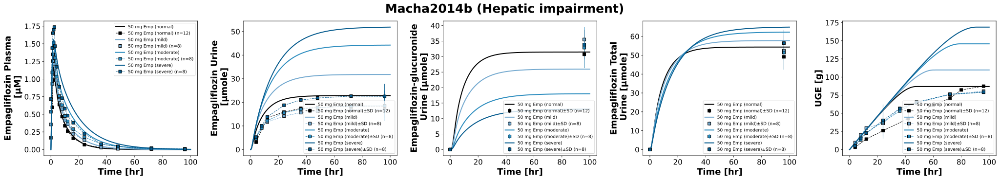

|  |
../../../../experiments/studies/macha2014b.py
from typing import Dict
from sbmlsim.data import DataSet, load_pkdb_dataframe
from sbmlsim.fit import FitMapping, FitData
from sbmlutils.console import console
from sbmlsim.plot import Axis, Figure
from sbmlsim.simulation import Timecourse, TimecourseSim
from pkdb_models.models.empagliflozin.experiments.base_experiment import EmpagliflozinSimulationExperiment
from pkdb_models.models.empagliflozin.experiments.metadata import (
Tissue, Route, Dosing, ApplicationForm, Health, Fasting, Coadministration, EmpagliflozinMappingMetaData
)
from pkdb_models.models.empagliflozin.helpers import run_experiments
class Macha2014b(EmpagliflozinSimulationExperiment):
"""Simulation experiment of Macha2014b."""
bodyweights = {
"normal": 75,
"mild": 82.5,
"moderate": 75.5,
"severe": 70.5,
} # [kg]
colors = {
"normal": EmpagliflozinSimulationExperiment.cirrhosis_colors["Control"],
"mild": EmpagliflozinSimulationExperiment.cirrhosis_colors["Mild cirrhosis"],
"moderate": EmpagliflozinSimulationExperiment.cirrhosis_colors["Moderate cirrhosis"],
"severe": EmpagliflozinSimulationExperiment.cirrhosis_colors["Severe cirrhosis"]
}
f_cirrhosis = {
"normal": EmpagliflozinSimulationExperiment.cirrhosis_map["Control"],
"mild": EmpagliflozinSimulationExperiment.cirrhosis_map["Mild cirrhosis"],
"moderate": EmpagliflozinSimulationExperiment.cirrhosis_map["Moderate cirrhosis"],
"severe": EmpagliflozinSimulationExperiment.cirrhosis_map["Severe cirrhosis"]
}
groups = list(bodyweights.keys())
info = [
("[Cve_emp]", "empagliflozin"),
("Aurine_emp", "empagliflozin_urine"),
("KI__UGE", "uge"),
("Aurine_eg", "eg_urine"),
("Aurine_emptot", "emptot_urine"),
]
panels = {
"empagliflozin": 0,
"empagliflozin_urine": 1,
"eg_urine": 2,
"emptot_urine": 3,
"uge": 4,
}
def datasets(self) -> Dict[str, DataSet]:
dsets = {}
for fig_id in ["Fig1", "Fig3", "Fig4", "Tab2A"]:
df = load_pkdb_dataframe(f"{self.sid}_{fig_id}", data_path=self.data_path)
for label, df_label in df.groupby("label"):
dset = DataSet.from_df(df_label, self.ureg)
# unit conversion to mole/l
# if label.startswith("empagliflozin_urine_"):
# dset.unit_conversion("mean", 1 / self.Mr.emp)
dsets[f"{label}"] = dset
# console.print(dsets)
# console.print(dsets.keys())
return dsets
def simulations(self) -> Dict[str, TimecourseSim]:
Q_ = self.Q_
tcsims = {}
for group in self.groups:
tcsims[group] = TimecourseSim(
Timecourse(
start=0,
end=100 * 60, # [min]
steps=500,
changes={
**self.default_changes(),
"BW": Q_(self.bodyweights[group], "kg"),
"[KI__fpg]": Q_(self.fpg_healthy, "mM"), # 1 subject T2DM in renal impairment group
"PODOSE_emp": Q_(50, "mg"),
"f_cirrhosis": Q_(self.f_cirrhosis[group], "dimensionless")
},
)
)
return tcsims
def fit_mappings(self) -> Dict[str, FitMapping]:
mappings = {}
for sid, name in self.info:
for group in self.groups:
mappings[f"fm_{name}_{group}"] = FitMapping(
self,
reference=FitData(
self,
dataset=f"{name}_{group}",
xid="time",
yid="mean",
yid_sd=None if name == "empagliflozin" else "mean_sd",
count="count",
),
observable=FitData(
self, task=f"task_{group}", xid="time", yid=sid,
),
metadata=EmpagliflozinMappingMetaData(
tissue=Tissue.PLASMA if name == "empagliflozin" else Tissue.URINE,
route=Route.PO,
application_form=ApplicationForm.TABLET,
dosing=Dosing.SINGLE,
health=Health.HEALTHY if group == "normal" else Health.HEPATIC_IMPAIRMENT,
fasting=Fasting.FASTED,
coadministration=Coadministration.NONE,
),
)
# console.print(mappings)
return mappings
def figures(self) -> Dict[str, Figure]:
fig = Figure(
experiment=self,
sid="Fig1_2",
num_rows=1,
num_cols=5,
name=f"{self.__class__.__name__} (Hepatic impairment)",
)
Figure.legend_fontsize = 10
plots = fig.create_plots(xaxis=Axis(self.label_time, unit=self.unit_time), legend=True)
plots[0].set_yaxis(self.label_emp_plasma, unit=self.unit_emp)
plots[1].set_yaxis(self.label_emp_urine, unit=self.unit_emp_urine)
plots[2].set_yaxis(self.label_eg_urine, unit=self.unit_eg_urine)
plots[3].set_yaxis(self.label_emptot_urine, unit=self.unit_emptot_urine)
plots[4].set_yaxis(self.label_uge, unit=self.unit_uge)
for sid, name in self.info:
kp = self.panels[name]
for group in self.groups:
# simulation
plots[kp].add_data(
task=f"task_{group}",
xid="time",
yid=sid,
label=f"50 mg Emp ({group})",
color=self.colors[group],
)
# data
plots[kp].add_data(
dataset=f"{name}_{group}",
xid="time",
yid="mean",
yid_sd=None if name == "empagliflozin" else "mean_sd",
count="count",
label=f"50 mg Emp ({group})",
color=self.colors[group],
linestyle="--" if kp not in {2, 3} else "",
)
return {
fig.sid: fig,
}
if __name__ == "__main__":
run_experiments(Macha2014b, output_dir=Macha2014b.__name__)
{kind=link}